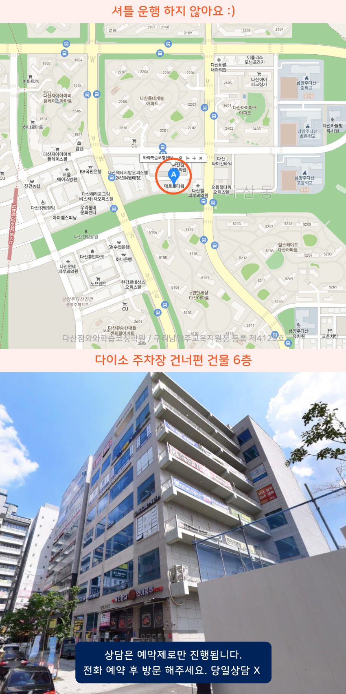

Area
다산동 중심 학습관리
다산동, 다산지구, 다산진건, 다산역 학생들의 현재 학습 상태를 기준으로 개념 보완, 유형 연습, 오답 확인이 자연스럽게 이어지는 다산동 와와학습코칭센터학원 학습 흐름을 만듭니다.
Area
다산동, 다산지구, 다산진건, 다산역 학생들에게 필요한 학습 계획과 영어·수학 맞춤 수업을 제공합니다. 다산동 와와학습코칭센터학원을 찾는 학생에게 자기주도학습 상담을 안내합니다.
무료 레벨테스트 신청하기Area
다산동, 다산지구, 다산진건, 다산역 학생들의 현재 학습 상태를 기준으로 개념 보완, 유형 연습, 오답 확인이 자연스럽게 이어지는 다산동 와와학습코칭센터학원 학습 흐름을 만듭니다.
Schools
Academy
다산동 와와학습코칭센터학원은 다산동, 다산지구, 다산진건, 다산역 학생들이 공부를 미루지 않고 매일 이어갈 수 있도록 학습 루틴을 함께 관리합니다. 다산지구 와와학습코칭센터학원 상담으로 개념 확인, 문제 적용, 오답 점검을 단계적으로 연결합니다.

Programs

목표 점수와 시험 일정을 기준으로 주간 학습량을 설계하고, 매일 실천 가능한 플래너 루틴을 잡아줍니다.

학생별 이해도에 맞춘 개념 설명, 유형 적용, 반복 훈련, 오답 정리로 부족한 단원을 보완해나갑니다.

하원 이후에도 과제 수행률 확인과 학원 밖 공부 습관까지 이어갑니다.
Process
학생별로 출발점이 다르기 때문에 수업도, 과제도, 피드백도 달라야 합니다.


Map

Guide
| 횟수 | 초등 | 중등 | 고등 |
|---|---|---|---|
| 주 5회 | 339,000원 | 336,000원 | 419,000원 |
| 주 4회 | 279,000원 | 301,000원 | 344,000원 |
| 주 3회 | 219,000원 | 236,000원 | - |
| 횟수 | 초등 | 중등 | 고등 |
|---|---|---|---|
| 주 5회 | 389,000원 | 416,000원 | 469,000원 |
| 주 4회 | 319,000원 | 341,000원 | 384,000원 |
| 주 3회 | 249,000원 | 266,000원 | - |
학년, 과목, 수업 시수, 지역에 따라 수업료가 달라질 수 있습니다.
초등 1학년부터 고등 전 학년까지 상담 가능합니다. 학생 수준과 목표에 맞춰 과목별 반을 안내합니다.
수업 일지, 과제 수행률, 오답 현황을 바탕으로 정기 피드백을 제공하고 필요 시 학부모 상담을 진행합니다.
현재 성적, 공부 패턴, 목표 학교와 시험 일정을 확인한 뒤 적합한 수업 시수와 커리큘럼을 제안합니다.